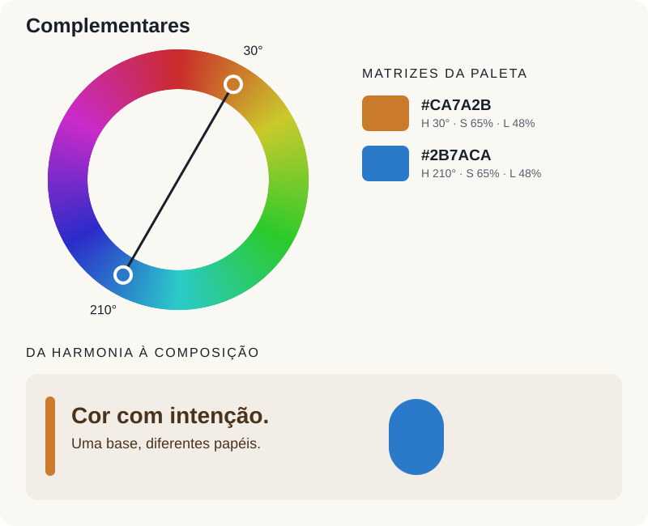
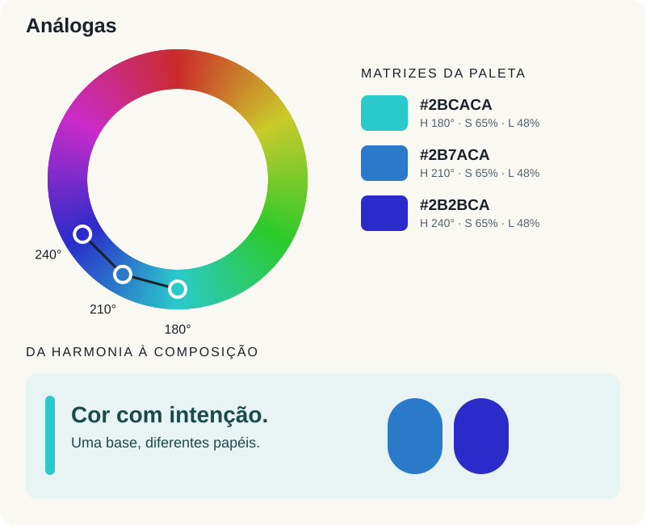
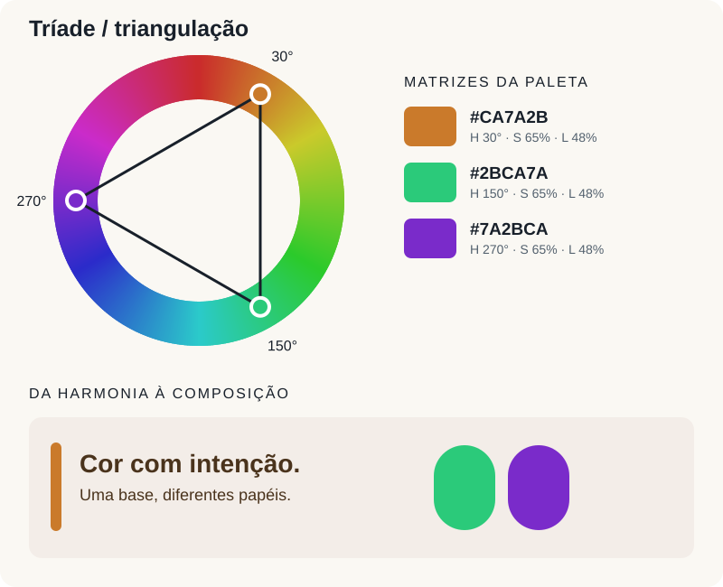
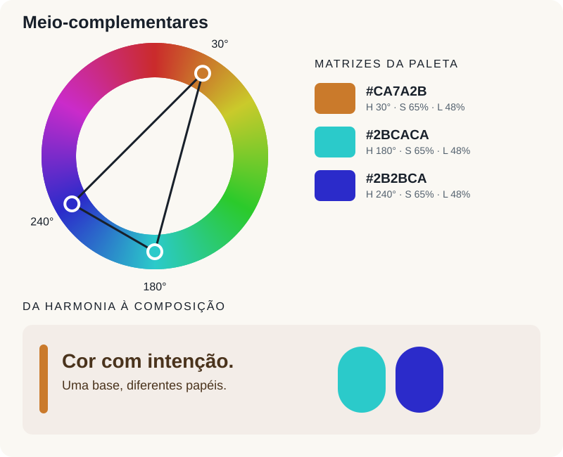
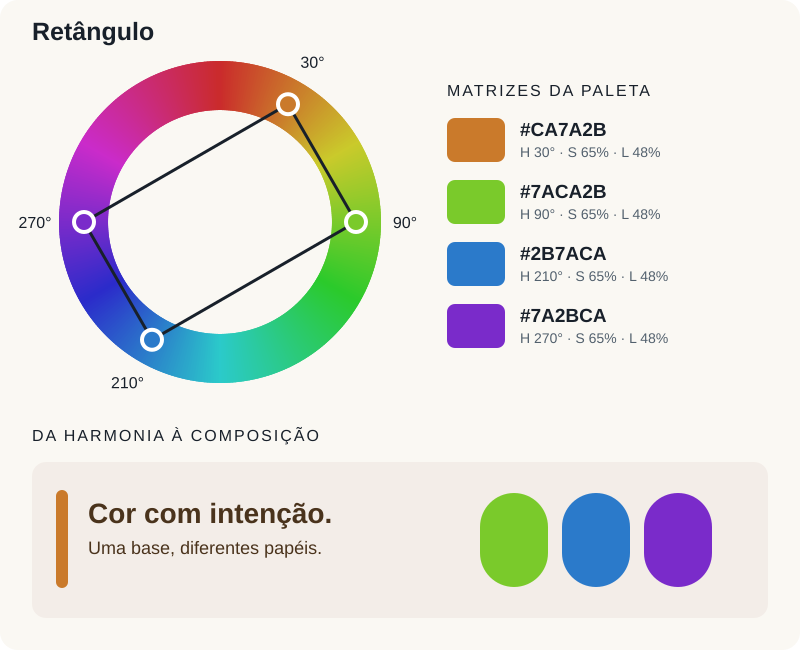
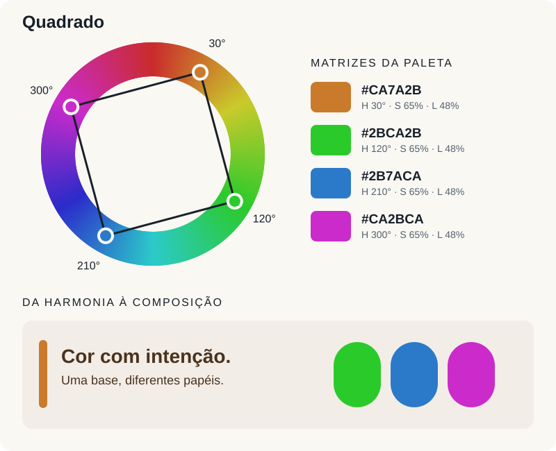
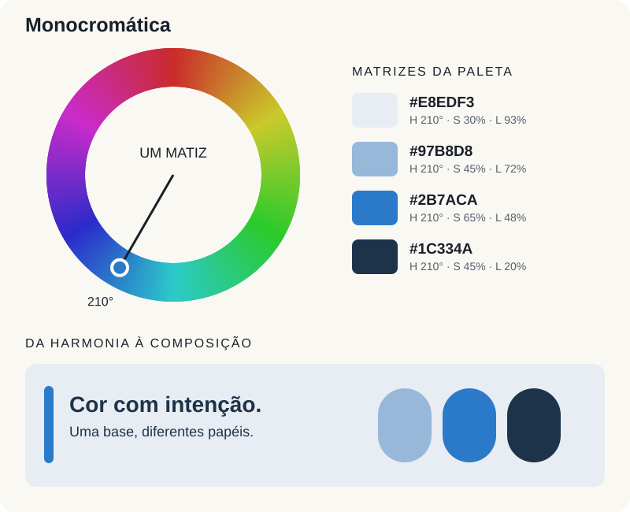

Escolher cores é uma das decisões que mais influenciam a percepção de uma peça gráfica. Uma paleta pode organizar informações, criar continuidade entre materiais e conduzir o olhar até uma ação. Mas reunir cores bonitas, isoladamente, não garante uma composição consistente: é preciso entender como elas se relacionam e qual função cada uma terá.
O círculo cromático, também conhecido como color wheel, oferece um ponto de partida para esse trabalho. Nele, a posição dos matizes permite construir relações de proximidade, oposição e equilíbrio. Neste guia, vamos transformar essas relações em seis métodos de composição: complementares, análogas, triangulação, meio-complementares, retângulo e quadrado.
O que é a roda de cores?
A roda de cores, ou círculo cromático, é uma representação circular que organiza as cores pela relação entre seus matizes. Cores próximas aparecem lado a lado, enquanto cores opostas ficam em lados contrários. Essa organização permite visualizar transições e encontrar combinações com continuidade ou contraste, em vez de escolher cada cor isoladamente.
Uma versão didática bastante conhecida apresenta 12 cores: três primárias, três secundárias e seis terciárias. Para entender essa divisão, vamos começar pelo modelo tradicional das artes, chamado RYB, de Red, Yellow, Blue — vermelho, amarelo e azul. Depois, veremos como essa classificação muda no ambiente digital.
Cores primárias: o ponto de partida
As cores primárias são as cores adotadas como base de um modelo de mistura. Nesse modelo, elas não são obtidas pela combinação das demais cores: são o ponto de partida para formar outras. No círculo tradicional RYB, as primárias são vermelho, amarelo e azul.
Não existe um único conjunto de primárias válido para todos os meios. Luzes, tintas de impressão e o modelo tradicional de pintura usam bases diferentes. Por isso, é importante identificar o sistema antes de falar em mistura ou em cores complementares.
Cores secundárias: a combinação de duas primárias
As cores secundárias resultam da combinação de duas primárias. No modelo didático RYB, elas ocupam as posições intermediárias entre as primárias que lhes dão origem:
- Amarelo + vermelho = laranja.
- Amarelo + azul = verde.
- Vermelho + azul = violeta.
Essas relações ajudam a compreender a estrutura do círculo. Na pintura real, o resultado depende dos pigmentos escolhidos e das proporções utilizadas: duas tintas chamadas de “azul”, por exemplo, podem produzir misturas diferentes com o mesmo amarelo.
Cores terciárias: as transições entre vizinhas
No círculo tradicional de 12 cores, as cores terciárias são obtidas pela combinação de uma primária com uma secundária vizinha. Elas preenchem os intervalos entre as seis cores anteriores e tornam as transições mais graduais.
São elas: amarelo-alaranjado, vermelho-alaranjado, vermelho-violeta, azul-violeta, azul-esverdeado e amarelo-esverdeado. O amarelo-alaranjado, por exemplo, fica entre o amarelo e o laranja; o azul-esverdeado, entre o azul e o verde. Nessa classificação, não basta misturar qualquer primária com qualquer secundária: a relação de vizinhança é o que define a posição intermediária.
Como isso muda nas telas?
Na luz, o sistema RGB usa vermelho, verde e azul como primárias. A combinação de luzes vermelha e verde produz amarelo; verde e azul produzem ciano; azul e vermelho produzem magenta. Assim, amarelo, ciano e magenta são as secundárias do RGB. Os matizes intermediários entre essas seis posições completam uma roda digital de 12 cores.
Na impressão em CMYK, por sua vez, ciano, magenta e amarelo são as bases cromáticas, acompanhadas pelo preto. A classificação depende do modelo: amarelo é primária no RYB e no CMY, mas secundária no RGB. Essa diferença explica por que uma roda tradicional de pintura não apresenta exatamente as mesmas relações de uma roda digital.
Como ler o círculo para compor uma paleta
Percorrer a borda do círculo significa mudar de matiz; traçar linhas entre pontos revela diferentes harmonias. Além de reconhecer primárias, secundárias e terciárias, convém separar três características para trabalhar com as cores:
- Matiz: a família da cor, como vermelho, verde ou azul. No círculo, corresponde a uma posição angular.
- Saturação: o quanto a cor se afasta de um cinza de mesma luminosidade no modelo usado. Reduzi-la permite obter versões mais discretas de um matiz.
- Luminosidade: no HSL, o parâmetro que aproxima a cor do preto ou do branco. Não equivale diretamente ao brilho percebido nem à luminância usada para calcular contraste.
Uma harmonia define principalmente uma relação entre matizes. A paleta final também depende de quão claras, escuras, intensas ou suaves serão suas cores. Dois projetos podem usar os mesmos ângulos e produzir resultados muito diferentes.
Qual círculo estamos usando? Os diagramas deste artigo usam o círculo de matizes HSL, derivado de RGB: vermelho em 0°, amarelo em 60°, verde em 120°, ciano em 180°, azul em 240° e magenta em 300°. O círculo tradicional de pintura, RYB, distribui as cores de outra maneira. Por isso, pares e tríades mudam conforme o modelo. As imagens explicam relações geométricas para paletas digitais, não receitas de mistura de tintas.
Nas ilustrações, as amostras partem de saturação de 65% e luminosidade de 48%, para facilitar a comparação. As pequenas composições acrescentam versões claras e escuras do primeiro matiz. Os códigos HEX identificam as cores em sRGB; sua aparência pode variar conforme a tela e as condições de visualização.
1. Complementares: oposição que cria destaque
A harmonia complementar combina dois matizes separados por 180°. Escolha uma posição no círculo e trace uma linha pelo centro: a outra extremidade indica sua complementar. No exemplo, usamos laranja em 30° e azul em 210°.

Essa relação é útil quando uma peça precisa de um foco evidente: um botão, um número, uma chamada de campanha ou um elemento de embalagem. Para começar, escolha uma cor dominante e reserve a oposta para áreas menores. Uma base azul profunda, por exemplo, pode receber detalhes em laranja sem que toda a superfície precise disputar atenção.
O cuidado: oposição de matiz não garante contraste de leitura. Duas cores intensas com luminosidades próximas podem criar desconforto nas bordas e dificultar a leitura de letras pequenas. Use versões mais claras ou escuras e verifique cada combinação entre texto e fundo.
2. Análogas: continuidade entre cores vizinhas
As cores análogas ocupam posições próximas no círculo. Uma construção simples é escolher uma cor central e duas vizinhas, uma de cada lado. Aqui, o azul em 210° é acompanhado por ciano em 180° e azul em 240°, formando um intervalo de 60°.

Essa proximidade pode dar unidade a uma identidade visual, a uma sequência de publicações ou a um projeto editorial. Defina uma cor de referência e use as vizinhas para diferenciar planos, detalhes e categorias. Não é necessário aplicar as três com a mesma intensidade.
O cuidado: proximidade demais pode reduzir a hierarquia. Se todos os elementos tiverem matizes vizinhos e valores semelhantes, títulos, fundos e informações secundárias podem se confundir. Crie diferenças de luminosidade e acrescente neutros para dar espaço à composição.
3. Triangulação: três pontos em equilíbrio
A triangulação, ou harmonia triádica, seleciona três matizes separados por 120°. Ao conectar os pontos, forma-se um triângulo equilátero. Nosso exemplo reúne laranja em 30°, verde em 150° e violeta em 270°.

A tríade oferece variedade para sistemas com diferentes categorias, ilustrações e materiais de campanha. Um caminho prático é usar o primeiro matiz como base, o segundo como apoio e o terceiro em detalhes pontuais. Também é possível suavizar duas cores e manter apenas uma mais saturada.
O cuidado: três cores fortes, em áreas semelhantes, podem competir pelo protagonismo. Antes de acrescentar novas tonalidades, estabeleça qual informação deve ser vista primeiro. A escolha da dominante deve acompanhar essa prioridade.
4. Meio-complementares: uma oposição dividida
A harmonia meio-complementar, também chamada de complementar dividida ou split-complementary, começa com uma cor-base. Em vez de usar sua oposta exata, escolhem-se dois matizes próximos dessa oposta, um de cada lado.
Partindo do laranja em 30°, a complementar direta seria 210°. Neste exemplo, substituímos esse ponto por 180° e 240°: ciano e azul. Os deslocamentos em relação à base são, portanto, 150° e 210°.

Essa estrutura permite trabalhar um destaque e duas cores relacionadas no lado oposto. Pode funcionar em uma página com chamadas alaranjadas, ilustrações em ciano e elementos de apoio em azul. Ajustar saturação e luminosidade ajuda a controlar a intensidade do conjunto.
O cuidado: ter três matizes não torna essa paleta automaticamente suave. Se todos forem muito saturados, a composição continuará intensa. Além disso, as duas cores de apoio precisam se distinguir quando representarem informações diferentes.
5. Retângulo: dois pares de complementares
A harmonia retangular, uma forma de harmonia tetrádica, reúne quatro matizes organizados em dois pares complementares. Escolha duas cores e acrescente a oposta de cada uma. Ao conectar os pontos em ordem ao redor do círculo, aparece um retângulo.
No exemplo, as posições são 30°, 90°, 210° e 270°. Laranja e azul formam um par; verde-amarelado e violeta, o outro. Os intervalos consecutivos alternam entre 60° e 120°.

Essa variedade é útil em sistemas que precisam acomodar diferentes linhas de produto, seções editoriais ou famílias de ilustrações. As quatro cores podem pertencer à identidade sem aparecer juntas em todas as peças. Um material pode usar apenas um par; outro, uma dominante e dois apoios.
O cuidado: quanto maior a variedade, mais importante é definir limites. Documente quais cores podem ser fundo, texto ou destaque e evite alternar essas funções sem critério. Uma dominante e áreas neutras ajudam a manter a unidade.
6. Quadrado: quatro matizes equidistantes
A harmonia quadrada também tem quatro cores e dois pares complementares, mas há uma diferença precisa: todos os intervalos são de 90°. O quadrado é um caso particular da estrutura tetrádica. Aqui, usamos laranja em 30°, verde em 120°, azul em 210° e magenta em 300°.

A estrutura oferece diversidade para projetos com várias categorias ou uma linguagem visual expressiva. É possível reservar um matiz para cada categoria e usar uma mesma base neutra em todas elas, mantendo unidade por meio da tipografia, do espaçamento e das proporções.
O cuidado: quatro posições igualmente espaçadas não significam quatro cores igualmente chamativas. O peso de cada uma depende da saturação, da luminosidade, da área ocupada e das cores ao redor. Ajuste esses fatores olhando a composição inteira.
7. Monocromático: um matiz, diferentes intensidades
O esquema monocromático parte de um único matiz e constrói a paleta variando sua saturação e luminosidade. Na roda de cores, a seleção permanece na mesma posição: em vez de buscar vizinhas ou opostas, exploramos versões mais claras, escuras, intensas e suaves da mesma família.
No exemplo, mantemos o azul em 210° e criamos quatro variações, de um azul muito claro e pouco saturado a um azul profundo. Monocromático não significa usar uma única amostra em toda a peça, nem se limita a preto e branco: uma família de azuis, verdes ou violetas também pode formar uma paleta monocromática.

Essa estrutura favorece unidade em identidades visuais, páginas e materiais editoriais. Um caminho prático é usar a versão mais clara no fundo, uma intermediária em superfícies de apoio, a mais intensa em detalhes e a mais escura nos títulos. A hierarquia nasce das diferenças entre essas versões, combinadas com tamanho, espaçamento e proporção.
O cuidado: variações muito próximas podem fazer os elementos se confundirem. Diferencie bem os níveis de luminosidade e verifique o contraste entre texto e fundo. Para categorias, estados ou gráficos, complemente a cor com rótulos, formas ou padrões. Se acrescentar um destaque de outro matiz, a composição passa a combinar a base monocromática com outra relação de cor.
Da paleta ao projeto: como escolher e aplicar
A geometria ajuda a explorar possibilidades; o projeto determina quais delas fazem sentido. Para uma composição com foco claro, comece testando complementares ou meio-complementares. Para continuidade, experimente análogas. Quando precisar de mais famílias de cor, avalie tríades, retângulos e quadrados. Nenhuma harmonia é, por si só, mais profissional do que outra.
- Defina o contexto. Considere conteúdo, público, suporte e identidade existente. Associações como “azul transmite confiança” dependem de cultura, contexto e execução; não substituem uma decisão fundamentada.
- Escolha uma cor de referência. Pode ser a cor da marca ou um matiz presente na fotografia principal. Aplique uma das geometrias a partir dela.
- Transforme matizes em funções. Defina fundo, texto, cor principal, apoio e destaque. Uma paleta de três matizes pode gerar várias versões claras e escuras sem perder coerência.
- Ajuste as proporções. A relação 60–30–10 pode servir como exercício inicial de dominante, apoio e acento. É uma heurística, não uma obrigação matemática; neutros também ocupam área visual.
- Teste em peças reais. Aplique as cores a um título, um parágrafo, uma imagem e uma chamada. Uma sequência de amostras não revela todos os problemas de uma página.
- Registre as decisões. Guarde códigos, funções e combinações aprovadas para manter consistência entre materiais e pessoas.
Harmonia e acessibilidade precisam trabalhar juntas
Uma combinação pode ser harmoniosa e ainda apresentar baixa legibilidade. Para texto na web, a WCAG 2.2, no nível AA, estabelece contraste mínimo de 4,5:1 para texto comum e 3:1 para texto grande — a partir de 18 pt, ou 14 pt em negrito, aproximadamente 24 px e 18,7 px. Confira os pares efetivamente usados; os diagramas deste artigo apresentam harmonias, não uma aprovação de todas as combinações como texto e fundo. Consulte o critério de contraste da W3C.
Também não dependa apenas da cor para comunicar um erro, uma categoria ou uma seleção. Acrescente rótulos, ícones ou padrões. Esse cuidado preserva a informação quando as cores são difíceis de distinguir e segue o critério de uso da cor da W3C.
Valide o resultado no suporte final
As paletas ilustradas aqui foram construídas para visualização digital. Se o projeto também for impresso, verifique o perfil de cor, o processo, o papel e uma prova de impressão. Um código HEX não define sozinho a reprodução em tinta. Para aprofundar essa diferença, leia RGB e CMYK: por que misturar luz não é o mesmo que misturar tinta.
Uma boa paleta se sustenta quando as cores têm funções claras. O círculo cromático oferece uma estrutura para escolher os matizes; o trabalho de composição transforma essa estrutura em hierarquia, legibilidade e identidade. Comece por uma relação simples, aplique-a ao conteúdo e ajuste até que cada cor contribua para o que a peça precisa comunicar.
Referências e ferramentas
- Adobe Color: ferramenta para explorar relações de cor no círculo cromático.
- Adobe: harmonias complementar dividida e quadrada.
- W3C: contraste mínimo de texto e uso da cor.
Uma paleta pensada para a sua marca
Uma identidade visual consistente conecta cores, tipografia e composição às necessidades do negócio. Vamos construir essas escolhas com critério e aplicações que funcionem no dia a dia.
Solicitar orçamento